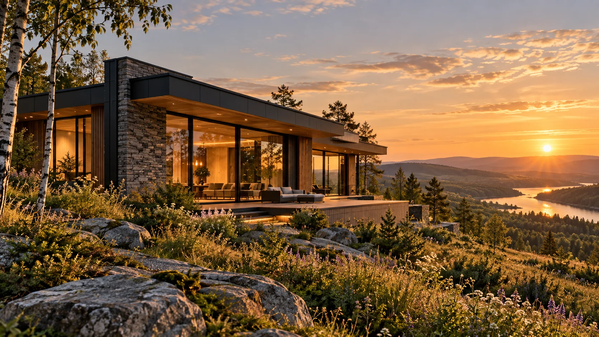
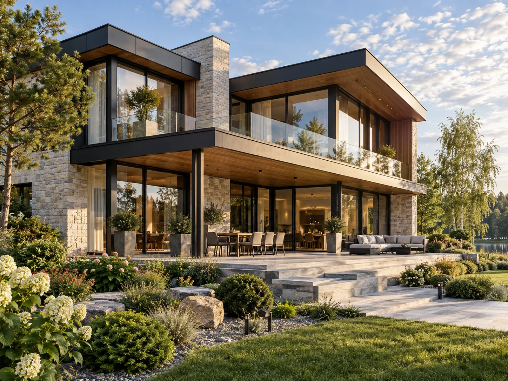
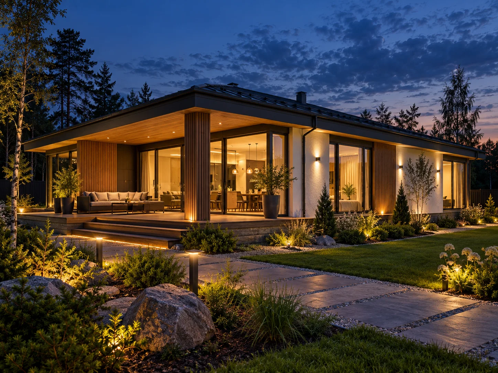

Тёплый
контур
- Фундамент и конструкции
- Кровля, окна и двери
- Фасадное решение

Выберите проект, разберитесь в комплектации
и обсудите дом, уже понимая следующий шаг.
Утром — тишина в кабинете. Днём — светлая гостиная. Вечером — ужин на террасе. Дом выбирают для таких обычных моментов.
Начните с того, как вы живёте: сколько нужно личных комнат, нужен ли кабинет, как часто собираются гости. Фильтр покажет проекты, которые подходят именно под этот сценарий.
Подбор проекта и обсуждение участка ↗Сравните общую зону, спальни и выход на участок
Поймите, что входит в дом на каждом этапе
Оставьте запрос по выбранному проекту, а не «в пустоту»
Площадь, этажность, кабинет,
терраса и место для гостей.
Таких проектов пока нет. Измените параметры или сбросьте фильтры.
Поверните модель, сравните материалы фасада
и посмотрите, как дом меняется днём и вечером.

168 м² · 4 спальни · терраса
и отдельное рабочее пространство.
3D-модель показывает объём, материалы и свет. Рабочие чертежи, конструктив и смета готовятся после привязки к участку.

АРХИТЕКТУРА ПОВСЕДНЕВНОГО КОМФОРТАПланировка, комплектация, участок и смета — четыре вещи, которые стоит обсудить до начала стройки.
Откройте карточку проекта: оцените общую зону, приватные комнаты и выход на участок. Так первая встреча начинается с предметного разговора.
Сравните три уровня готовности. После выбора проекта и анализа участка компания фиксирует состав работ, сроки и стоимость в смете.
Заявка содержит выбранный проект, комплектацию и ваши пожелания. Специалист видит контекст до звонка, поэтому вам не нужно повторять вводные.
Состав работ, сроки и стоимость
уточняются после анализа участка.
Начните с предварительного сценария: какая квартира есть сейчас, какой дом вы ищете и нужна ли доплата. После этого можно обсуждать реальные варианты.
Обмен зависит от объекта, его ликвидности и условий сделки.Ваши пожелания, участок, сроки и ориентир по бюджету.
Планировка, комплектация и состав работ под ваш участок.
Согласованные этапы, документы и приёмка результата.
Передача дома и условия дальнейшего сопровождения.
Выберите удобное время. Проект и пожелания попадут в обращение, чтобы разговор начался с деталей.
Подбор проекта и обсуждение участка